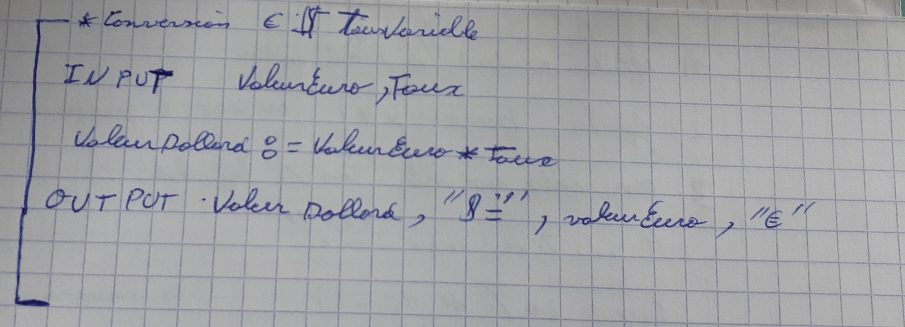
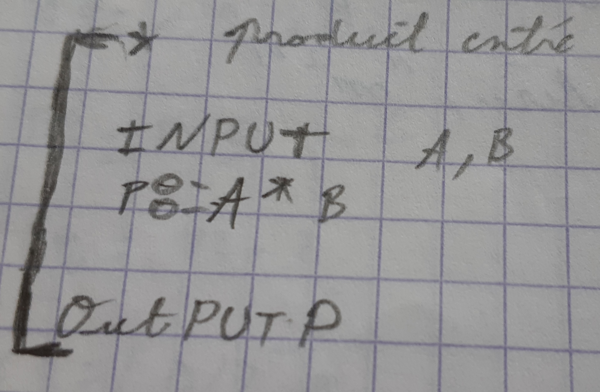
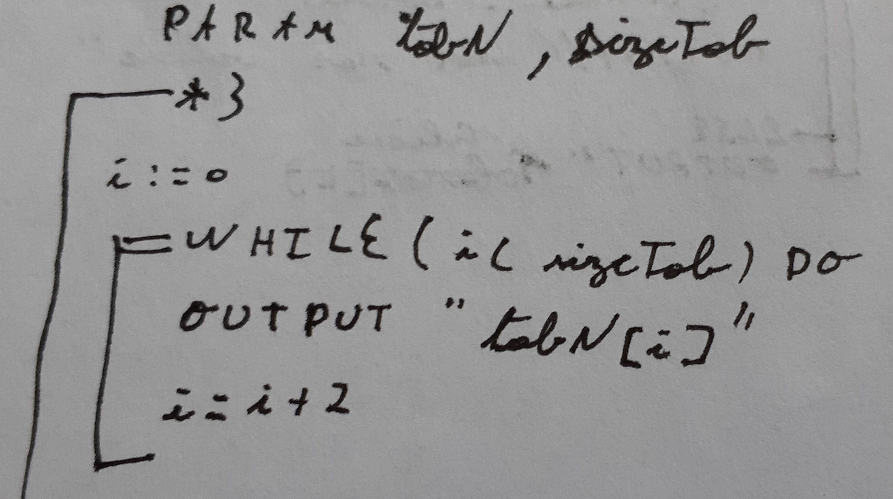
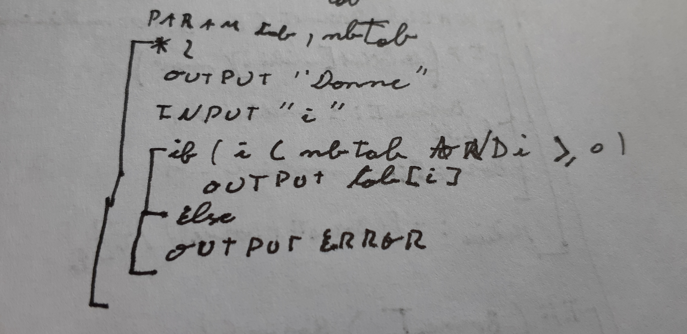
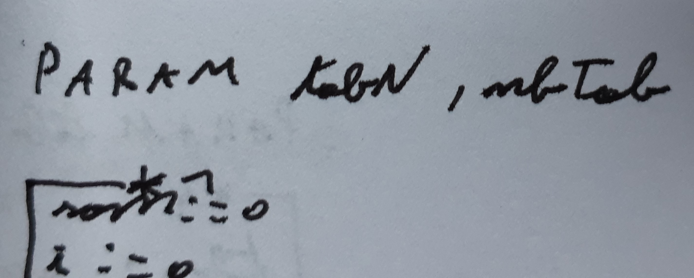
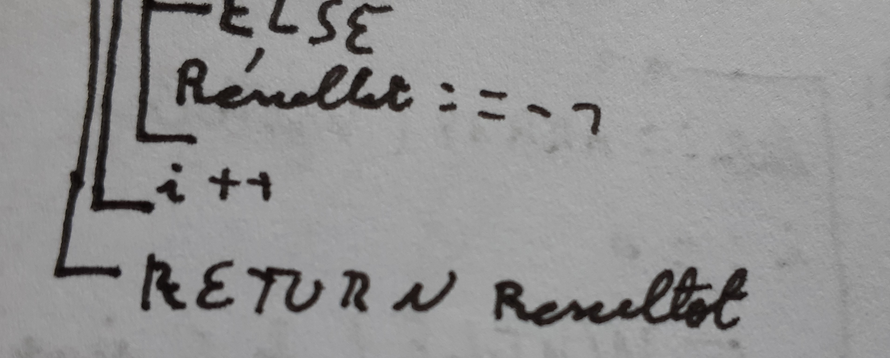

Ce qui faut savoir avant de commencer :
Si on veut afficher une valeur et pas ce qu'il contient on doit le mettre entre guillemets (« P »)
Pour faire un égal on utilise : = (P: =4 "la lettre P contient la valeur 4").
Qu'est-ce que c'est un algorithme ? :
Un algorithme est une suite d'instructions permettant la résolution de problèmes (simples et compliqués).
Les différents mots réservés :
INPUT :
Ce paramètre permet à l'utilisateur de rentrer quelque chose dans le programme. Ce paramètre correspond au paramètre scanf du langage C
La photo suivante montre un exemple où l’on entre le taux et une valeur euro. Attention, vous remarquez que le mot valeur euros est collé et qu'il y a une majuscule à valeur et euros. Si on veut entrer un mot composé, il faut le coller et mettre à chaque nouveau mot une majuscule. Exemple : valeur euro cela va s'écrire ValeurEuro.
OUTPUT :
Ce paramètre permet à l'utilisateur d'afficher quelque chose sur l'écran. Ce paramètre s'apparente au paramètre printf du langage C.
Dans l'exemple suivant, l’OUTPUT va afficher ce que contient P c'est-à-dire A*B mais si on voulait afficher la lettre P on aurait mis des guillemets (OUTPUT : ="P")


WHILE DO :
La condition while permet de faire une boucle et de ne pas pouvoir la quitter tant qu'une condition n'est pas satisfaite.

DO WHILE
la condition do while a la même fonctionnalité que la condition while sauf qu'il n'y a pas besoin d'initialiser un int, char ou double pour pouvoir rentrer dans la boucle.
For
La condition For permet de répéter un nombre de fois fixé l'instruction qui se trouve à l’intérieur.
IF/ELSE
La condition IF/ELSE permet d'exécuter une série d'instructions si la condition est remplie.

PARAM
L'instruction PARAM permet d'utiliser des données stockées dans une mémoire. Cela nous évite de réécrire des données à chaque instruction. Nous utilisons le PARAM, par exemple, dans les fonctions.
Dans l'exemple ci-dessous, on utilise les données tabN et nbTab.

RETURN
L'instruction RETURN va nous permettre de récupérer les instructions d'un programme pour pouvoir les réutiliser dans d'autres programmes. Nous l'utilisons, par exemple, dans les fonctions tout comme le PARAM.
Dans cet exemple, on récupère la valeur écrite dans résultat pour pouvoir la réutiliser dans un autre programme.

Qu'est-ce qu'une fonction?
Une fonction est un bout de programme conçu pour être réutilisé dans d'autres programmes.
Le CASE
La structure CASE permet d’exécuter une instruction selon la valeur d’une variable. C’est-à-dire qu’elle va vérifier si une variable a une certaine valeur et si cette variable possède cette valeur, alors elle exécute la condition.
Les tableaux
Les tableaux permettent de stocker plusieurs informations. Les tableaux sont stockés dans des variables et sont un ensemble ordonné de valeurs désignées par un indice.